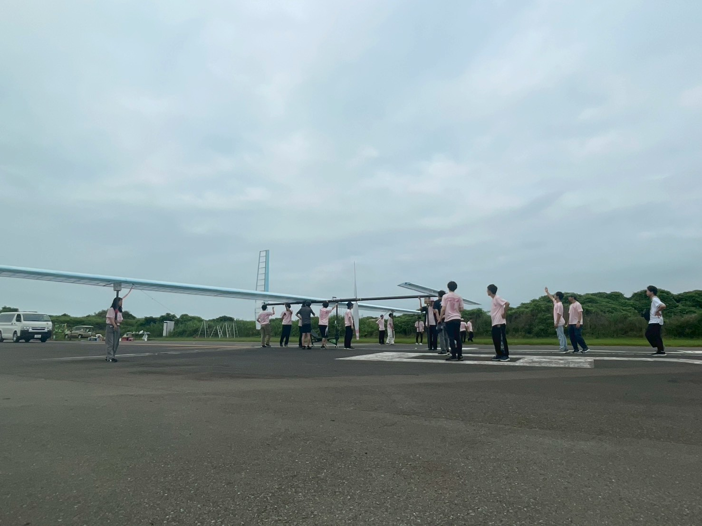
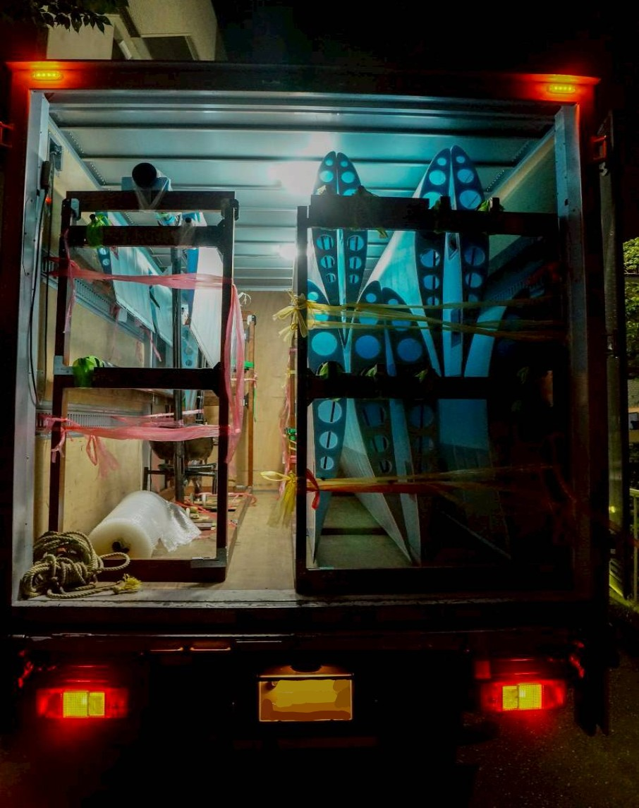
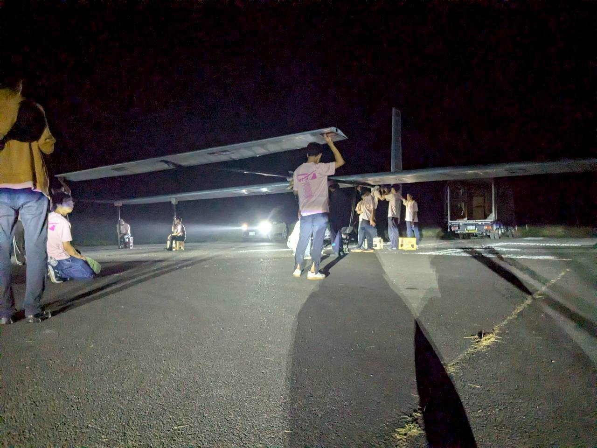
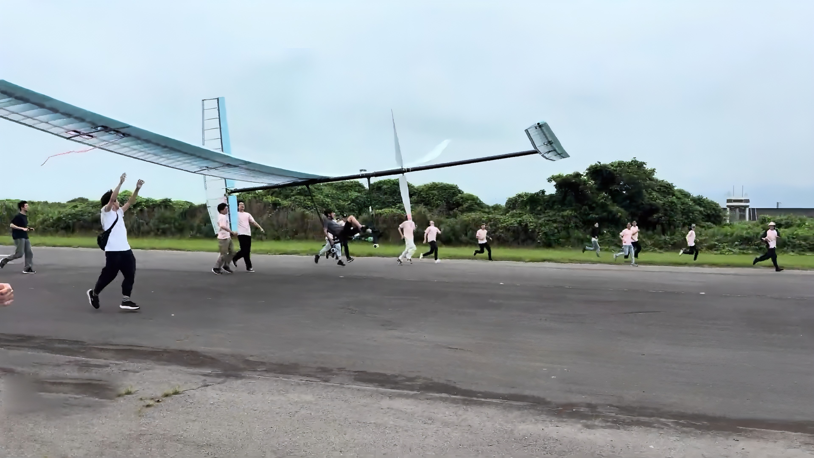
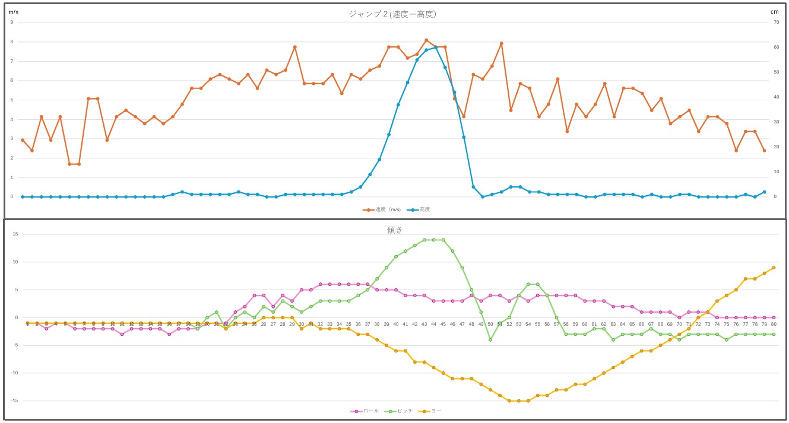

２６代 第１回TFレポート
TFとは
「TF」とは「テストフライト」の略で、その名の通り学内や飛行場で機体を実際に飛ばして試験を行うことです。幣サークルでは７月１２日に富士川滑空場にてTFを行いました。

富士川滑空場で待機する機体
TFの内容
大学にて１８時頃から機体の積み込みを始めました。幅３０メートルにもなる巨大な翼を９枚に分割して中型トラックに積み込みます。

積み込み中の機体
０時頃に富士川滑空場に到着し、機体の組み立てを開始しました。急な雨に見舞われる等のアクシデントもありましたが、素早く機体を組み立てることができました。

組み立て中の機体
朝６時ごろから、日の出とともにフライトを行いました。今回のＴＦでは無人滑走試験、パイロット有の滑走試験、ジャンプ試験を行い重心や操舵について機体の特性を確認することができました。

飛行中の機体
結果

ジャンプ試験の結果は上のようになりました！機速6~7m/s辺りで浮上し、55cm程度のジャンプに成功しています！一方で操舵や機体の安定性については課題が残る結果となりました。ロールは小さく安定していますが、ヨー方向には大きく傾いてしまっています。
さいごに
今回のTFは全体として非常に順調に進めることができました。今後は操舵や重心の調整を行いつつＴＦを行い、機体の完成度を高めていきます！
ここまで読んでいただきありがとうございました！
横浜AEROSPACE 27代構造設計 山鹿